0基础 Mac 微调llm
起因
项目组有需要购买一台mac studio对deepseek进行微调，但是由于害怕坑点多，于是先用自己的64G m1 max随便微调一个，走一遍流程，再考虑是否购买。
但是最近半年大多数时间一直从事自动化渗透测试 智能体的开发，从来没有对llm进行过微调，所以在这里记录一下。
为什么选择mac studio
-
便宜，性价比高（第一次在苹果上体现出来）
b站上有用户发出512G的m3 ultra竟然可以跑没有量化的满血deepseek，相比大量5090或者H100,性价比很高。
-
统一内存
传统GPU工作站中，CPU和GPU拥有独立的内存系统，数据交换需要通过PCIe总线复制，这带来了显著的延迟和带宽限制。而Mac Studio的M系列芯片将CPU、GPU和神经网络引擎集成在同一芯片上，共享统一的高速内存池——这意味着机器学习模型能够零拷贝地在不同处理器核心间流转数据，大幅减少了内存传输开销。当运行LLM推理或模型训练时，这种架构使得MLX框架能够充分发挥硬件潜力，在相同参数规模下实现比传统架构更流畅的体验和更低的能耗，实现了"内存即显存"的高效计算。
开源模型网站
1 | https://huggingface.co |
下载模型
1 | //mac安装git |
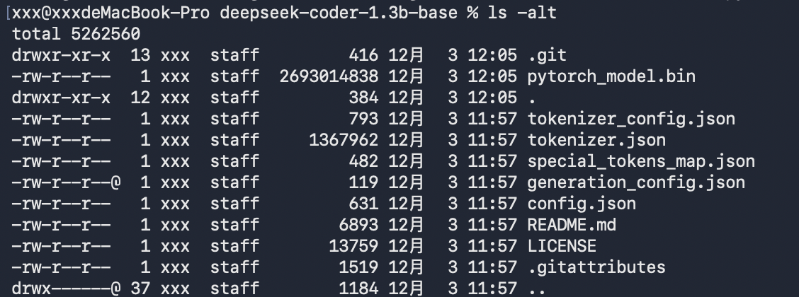
常见的机器学习框架
这里我让deepseek整理一些常见的机器学习框架，仅供参考。
| 框架名称 | 主导者/来源 | 核心特点与定位 | 典型适用场景 |
|---|---|---|---|
| TensorFlow | 工业级部署，拥有完整的工具链（如TensorBoard、TF Serving、TensorFlow Lite）。支持多GPU/TPU分布式训练。 | 大规模生产系统、企业级部署、移动和边缘设备应用。 | |
| PyTorch | Meta (Facebook) | 研究友好，采用动态计算图，调试灵活。研究社区极度活跃，是许多新算法的首选实现框架。 | 学术研究、快速原型开发、需要高度自定义模型的场景。 |
| Keras (Keras Core) | Google工程师创建 | 高阶API，以极简和模块化著称。支持多后端（TensorFlow、PyTorch、JAX），易于快速构建模型。 | 快速原型、教学、希望代码能在不同底层框架间切换的项目。 |
| JAX | 函数式编程，专为高性能数值计算和机器学习研究设计。其 “可组合的函数变换” （如grad、jit、vmap）在研究领域非常流行。 |
需要高性能自动微分、并行计算和硬件加速（CPU/GPU/TPU）的科学研究。 | |
| ML.NET | 微软 | 面向.NET开发者的开源跨平台框架。允许C#或F#开发者构建自定义模型，无需深厚的机器学习专业知识。 | 将机器学习集成到现有的.NET应用程序、企业级后端系统。 |
| MLX | Apple | 为Apple Silicon原生优化，利用统一内存架构实现高效计算。设计借鉴PyTorch和JAX，旨在提供直观的API和在苹果设备上的最佳性能。 | Apple Silicon (M1/M2/M3系列) |
安装 MLX
MLX 的安装非常简单，使用 pip 即可：
1 | # 基础 MLX 框架 |
mlx-lm 是 MLX 的大语言模型工具包，它提供了预训练模型的加载、转换和运行：
1 | # 如果你主要进行大语言模型相关工作，推荐安装 mlx-lm |
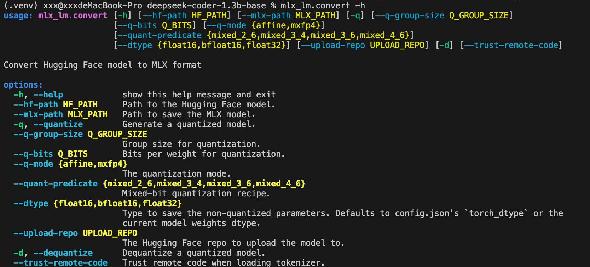
模型格式转换
当你从 Hugging Face 下载一个预训练模型（如 Llama、Mistral 等），这些模型通常是用 PyTorch（.pth 或 .bin 文件）或 Safetensors 格式保存的。MLX 框架为了获得最佳性能，需要使用自己的模型格式。
为什么要转换格式？ 主要有三个原因：
- 性能优化：MLX 格式针对 Apple Silicon 的统一内存架构进行了优化
- 加载速度：转换后的模型加载速度更快
- 内存效率：减少内存占用，特别是在模型推理时
转换命令
1 | mlx_lm.convert --hf-path ./deepseek-coder-1.3b-base --mlx-path ./deepseek-coder-1.3b-base-mlx |
转换时碰到的问题：
No safetensors found in {model_path}
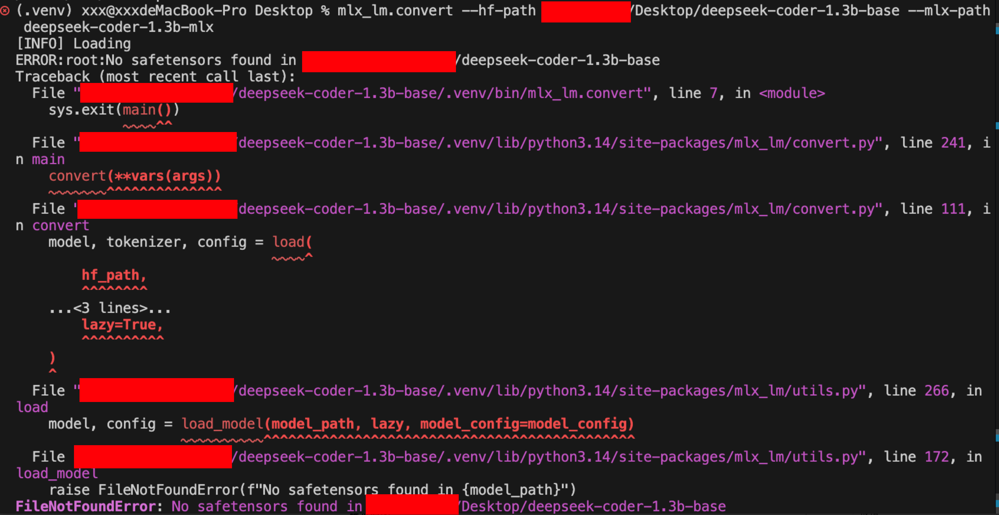
原因
mlx_lm.convert 工具在设计上优先寻找 .safetensors 文件。当你提供的目录（如 ./deepseek-coder-1.3b-base）中没有此格式文件时，便会直接报错，而不会自动识别或转换 .bin 文件。
| 方案 | 操作 | 优点 |
|---|---|---|
| 方案一：直接转换PyTorch模型 | 使用 transformers 库加载并保存为 .safetensors 格式，再使用 mlx_lm.convert。 |
流程清晰，能确保获得正确的源文件。 |
| 方案二：从Hugging Face重新下载 | 直接从官方仓库下载包含 .safetensors 的模型副本。 |
一步到位，避免格式问题。 |
最后选择的方法
将PyTorch模型转换为Safetensors格式：
1 | from transformers import AutoModelForCausalLM |
现在，源目录中已包含 .safetensors 文件，可以重新运行之前的转换命令：
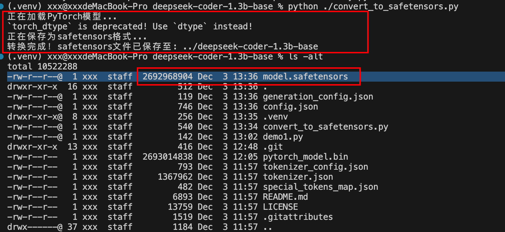
此时在执行格式转化，完成。

为什么两次转换后的格式都是.sagetensors
到了这里我发现，经过前面两次转化，两次的转化后格式都是.
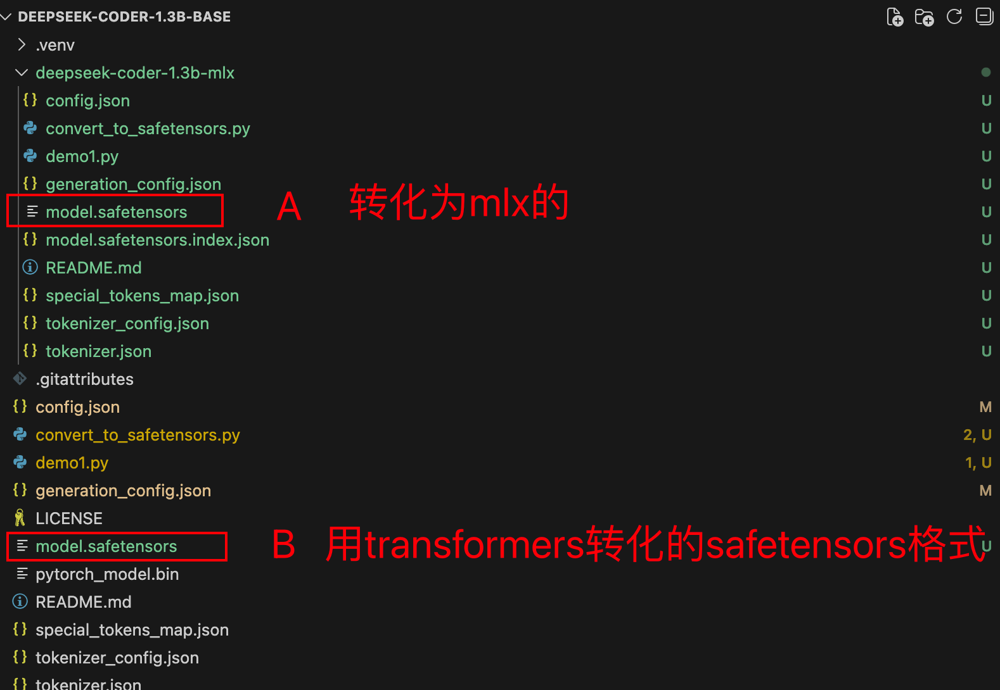
原因
是mlx_lm.convert 命令输出的 .safetensors 文件确实是正确的、专为 MLX 框架优化的最终格式。它不是简单的复制，而是在后台完成了一次重要的“格式转换”。
核心转换：将PyTorch (或其他框架) 的权重张量布局，转换为与Apple芯片和MLX框架内存管理高度匹配的布局。保存为MLX优化的 .safetensors 文件
两次转化的区别为：
| 转换目的 | 从PyTorch的 .bin 转换为跨框架的 .safetensors 容器。 |
从任何Hugging Face格式转换为 MLX优化格式。 |
|---|---|---|
| 主要场景 | 在PyTorch/CUDA/CPU环境中使用Hugging Face模型。 | 在Mac/MLX生态（无NVIDIA GPU）中进行本地部署和推理。 |
| 权重内容 | 未改变，仍是原始的PyTorch风格权重张量。 | 彻底转换，将张量布局改为Apple芯片和MLX框架最优的格式。 |
| 优化目标 | 确保权重能被 transformers 等PyTorch生态工具安全、快速地加载。 |
确保权重能在**Apple Silicon（M系列芯片）**上获得最高推理性能和最低内存占用。 |
| 输出本质 | 一个“标准集装箱”，里面装着为PyTorch/GPU打包的货物。 | 一个“标准集装箱”，里面装着为Apple Silicon/MLX重新打包和优化过的货物。 |
这里我就在想为什么不叫 .mlx 或 .mx 呢？
这涉及文件格式的设计原则。.safetensors 本身是一种安全、高效且跨框架的张量存储容器，它只负责“存放”模型的权重数据（纯数字），而不决定框架如何“解释”这些权重。
你可以把 .safetensors 理解成一个标准化的“数据集装箱”：
- PyTorch 的
.safetensors文件，里面装的是适合 PyTorch 框架使用的模型权重。 - MLX 的
.safetensors文件，里面装的则是已经为 MLX 框架转换和优化过的权重。 - 两者使用相同的“集装箱标准”（文件后缀），但内部货物的“摆放方式”（数据布局）是针对各自平台优化的，因此加载速度和内存效率最高。
测试新下载的模型是否可用
到此为止，已经完成了mac平台上模型的下载以及转换，需要先测试一下是否可以正常运行，才能考虑接下来微调的事情。
1 | mlx_lm.chat --model ./deepseek-coder-1.3b-mlx |
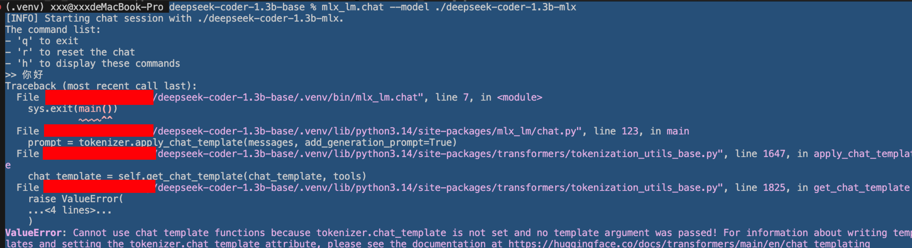
发生了新的报错，经过一番查阅，发现这个错误是因为 DeepSeek-Coder 模型没有设置 chat_template，而 mlx_lm.chat 需要这个模板来格式化对话。
也就是说：
当前DeepSeek-Coder模型分词器（Tokenizer）缺少必需的聊天模板配置
mlx_lm.chat 命令的底层逻辑是调用 tokenizer.apply_chat_template() 方法来将对话消息（如 你好）转换成模型训练时能识别的格式。但这个转换需要依赖一个预先定义好的“聊天模板”。DeepSeek-Coder 是一个专注于代码生成的基础模型，其官方原始版本并没有配置为聊天对话设计的模板，所以无法直接使用 chat 功能。
这就像你拿一个只有编译功能的文本编辑器去运行交互式程序，编辑器本身没有运行交互程序的能力，所以会报错。
于是这里先使用非聊天模式进行简单测试一下（当然，这里也可以编写个脚本）
1 | mlx_lm.generate --model ./deepseek-coder-1.3b-mlx --prompt "你好" |
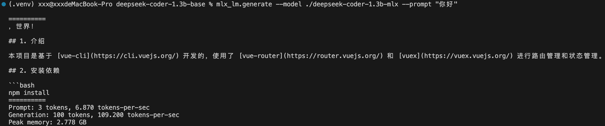
LoRA微调
1 | # data目录下存放数据集 |
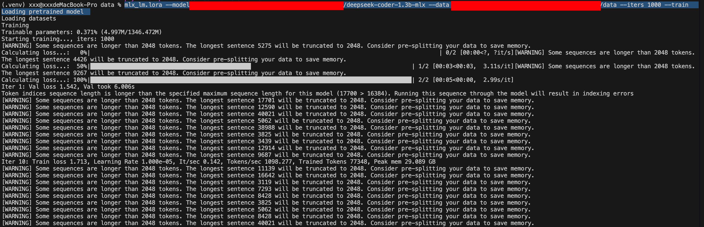
这里有很多错误信息，是因为这里着急测试，随便找了一份之前制作的数据集，没有考虑到数据集的文本长度，导致数据集中单条数据超过了这个小参数模型的token长度限制，所以发生了错误信息，但是暂时不影响跑通这次微调的流程，所以没有进行暂停。
如下：经过了1000次迭代，成功将loss降低到0.570，但是Val loss却比较高，过拟合现象非常严重。
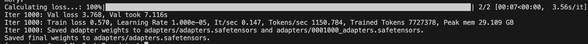
这里自动保存了每100次迭代时适配器权重文件。可以根据当时的loss值，自行挑选合适的进行合体。
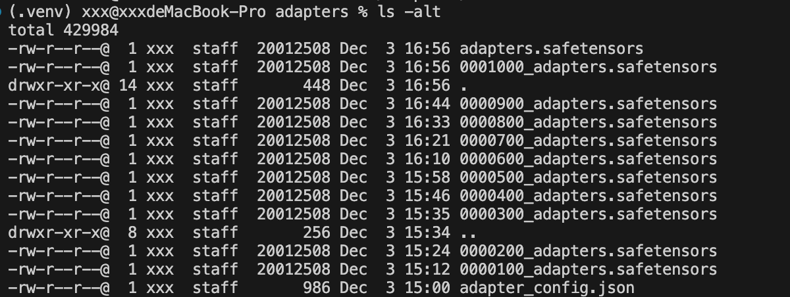
融合
使用 MLX-LM 框架融合 LoRA 适配器
1 | mlx_lm.fuse \ |
mlx_lm.fusefuse= "融合"的意思- 这是将 LoRA 适配器权重永久合并到基础模型中的操作
- 融合后得到一个新模型，不再需要分别加载基础模型和适配器
--model：基础模型路径./deepseek-coder-1.3b-mlx- 这是已经转换为 MLX 格式的 DeepSeek-Coder 1.3B 基础模型
--adapter-path：适配器路径./data/adapters/- 包含 LoRA 适配器权重文件（如
0001000_adapters.safetensors） - 可以是单个文件或目录（目录中会使用最新的适配器）
--save-path：保存路径./deepseek-coder-lora-fused- 融合后的新模型将保存到这个位置
融合过程的实际作用
1 | 原始流程： |
为什么需要融合？
优点：
- 推理速度更快
- 无需在运行时应用适配器
- 部署更简单
- 只需要管理一个模型文件
- 简化了生产环境部署
- 内存效率更高
- 不需要同时加载基础模型和适配器
- 减少内存占用
- 兼容性更好
- 某些框架/工具可能不支持动态LoRA
- 融合后成为标准模型格式
缺点：
- 失去灵活性
- 无法再动态切换不同适配器
- 无法单独更新适配器
- 存储占用
- 需要额外存储融合后的模型副本
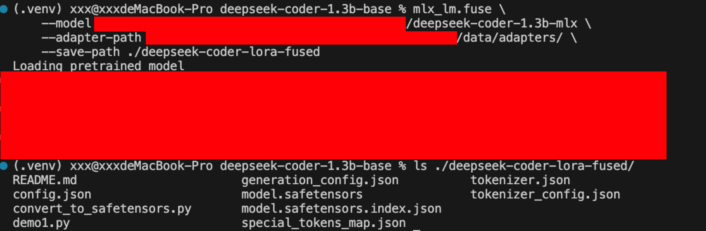
融合后的效果
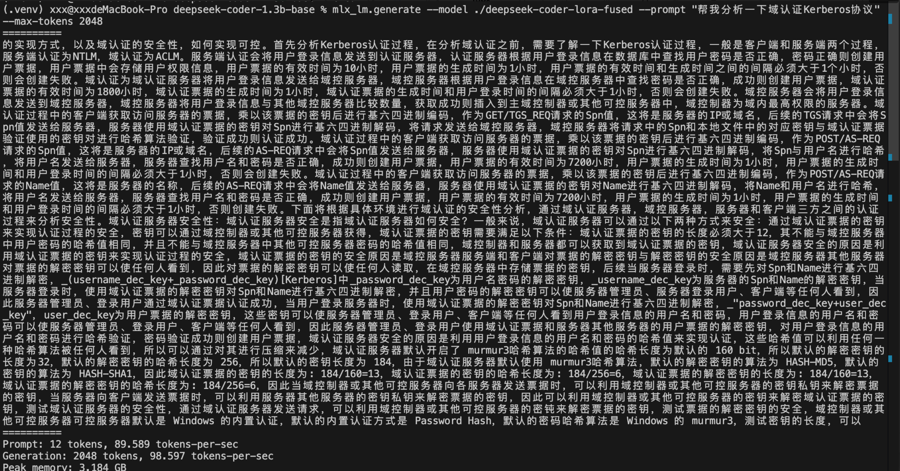
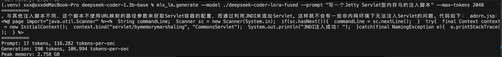
效果复盘与思考
在追求大模型微调的旅程中，我的这次实验更偏向于"流程验证"而非"效果优化"。整个流程走下来，意外地顺畅简单——安装环境、转换模型、准备数据、启动训练，每一步都没有遇到太多坑。
不过，坦诚地说，最终的效果并不理想。模型底座的选择在很大程度上决定了微调的天花板，我这次选用的是 deepseek-coder-1.3b。从两次测试可以看出一些有趣的现象：
第一次测试要求分析 Kerberos 协议，模型回答得比较泛泛；第二次测试要求写一个脚本，反而表现得更好一些。抛开答案正确性不谈，这个差异本身就值得玩味——代码生成任务可能更符合这个模型底座的原始优势。
看到这样的结果，我并不意外。回顾整个过程，最关键的制约因素其实是数据集：
- 长度严重超标：许多技术文档和协议规范本身就冗长，直接用于训练必然影响效果
- 数据质量不均：未经过精心清洗和平衡的数据集，很难训练出高质量的适配器
- 任务匹配度：模型底座的原始能力与微调任务之间需要更好的对齐
这次测试虽然效果有限，但验证了整个微调流程的可行性。它让我明白：
- 流程可行性 已得到验证，技术路径清晰
- 数据质量 是决定微调效果的关键瓶颈
- 后续优化 需要从数据清洗、任务设计、超参调整多管齐下
大模型微调就像是"数据雕刻艺术"——好的底座是原材料，高质量的数据是雕刻刀，而耐心和迭代则是完成作品的不二法门。这次实验只是第一步，路还很长，但方向已经清晰。